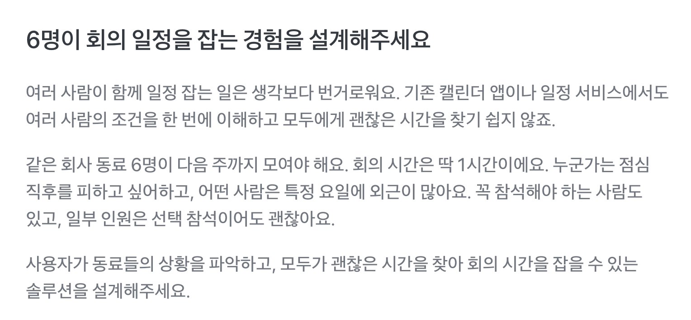

빠른 설계
AI와 아이디어 구체화
Toss 2026 Design challenge
01 · How I Worked
설계부터 프로토타입 구현, 사용성 테스트, 개선까지 빠르게 반복했습니다.
무엇을 만들고 왜 바꿀지 결정
AI와 아이디어 구체화
동작하는 시안 구현
직접 사용하며 검증
AI와 문제 수정
02 · Brief Analysis

challenge recognition
단순히 빈 시간이 겹치는지만 확인해서는 회의 시간을 정할 수 없었습니다.
6명에게는 피하고 싶은 시간과 외근 일정이 있었고, 참석 우선순위도 달랐습니다.
따라서 각자의 조건을 한곳에 모으고, 필수 참석자의 가능 여부와
다른 구성원의 선호를 함께 비교할 방법이 필요했습니다.
03 · Task Analysis
다들 언제 되는지 묻고, 응답을 하나씩 모아야 합니다.
모인 시간을 비교해 가장 괜찮은 시간을 찾아야 합니다.
모두가 가능한 시간이 없다면, 각자의 조건을 비교하고 수용 가능한 대안을 찾아야 합니다.
회의 시간 정하기는 하나의 일이 아니었습니다.
각자의 조건을 모으고, 가능한 시간을 비교하고, 의견을 조율하는
세 가지 일이 모두 주최자 한 사람에게 집중되어 있었습니다.
현재 서비스들은 이 부담을 어떻게 해결하고 있을까요?
04 · Market Research
회의 시간 정하기를 모으기, 비교하기, 조율하기로 나누고 대표적인 일정 조율 방식을 직접 사용해 봤어요.
익숙한 채널에서 바로 시작할 수 있어요. 하지만 답변을 모아 정리하고, 가능한 시간을 비교하는 일은 주최자가 직접 해야 해요.
*kakaotalk, slack, Microsoft Teams
응답은 쉽게 모을 수 있지만, 주최자가 후보 시간을 먼저 정해야 하고 참석자는 주어진 선택지 안에서만 답할 수 있어요.
*Doodle · 카카오톡 투표 · 네이버 밴드 투표
가능한 시간이 겹치는 구간을 쉽게 찾을 수 있어요. 하지만 별도의 링크와 화면을 오가야 하고, 조건이 충돌할 때 무엇을 우선할지는 주최자가 판단해야 해요.
*When2meet · QuickFigure
각 방식은 일부 과정만 도왔고, 모으기부터 조율하기까지 하나의 흐름으로 이어주지는 못했어요.
What We Learned
기존 도구들은 모으기·비교하기·조율하기 중 일부만 지원했습니다.
세 과정을 하나의 흐름으로 연결해 주최자의 부담을 줄여주는 방식은 찾기 어려웠습니다.
그래서 세 과정을 하나의 흐름으로 연결하되,
시스템은 판단에 필요한 정보를 정리하고 주최자는 최종 결정을 내리는 구조로 설계했습니다.
05 · Design Direction
기존 도구는 일부 과정을 도왔지만, 모으고·비교하고·조율하는 일은 여전히 주최자의 몫이었습니다.
필참 여부·선호·일정 제약까지 함께 고려해 시스템이 추천하고, 사람은 최종 결정에만 집중할 수 있도록 설계했습니다.
시스템이 모으고, 비교하고, 추천합니다.
주최자는 시스템의 추천을 바탕으로 상황맥락을 고려해 최종 결정만 합니다.
06 · System Flow
회의 만들기부터 결과 확인까지, 각 주체의 행동이 하나의 흐름 안에서 이어집니다.
역할을 다시 나누는 데서 그치지 않고,
모으기·비교하기·조율하기 각 단계에서 사용자가 직접 해야 하는 일까지 줄였습니다.
07 · Build
정보 구조를 설계한 뒤, Claude Code를 활용해 직접 조작할 수 있는 프로토타입으로 구현했습니다. 정지된 화면이 아니라 전체 흐름을 직접 따라가며, 화면이 아닌 실제 사용 경험을 확인했습니다.
처음부터 모든 화면을 완성하지 않았습니다. 핵심 흐름을 먼저 구현하고, 직접 사용하며 발견한 문제를 다음 버전에 바로 반영했습니다. AI로 구현과 수정 시간을 줄인 만큼, 사용 흐름을 검증하고 다음 방향을 판단하는 데 더 집중했습니다.
설계 → 프로토타입 → 검증 → 개선 ↺
빠르게 프로토타입을 만들고 검증하며 구체화 했습니다.
핵심 흐름부터 구현하고, 사용하며 발견한 문제를 다음 버전에 반영했습니다.